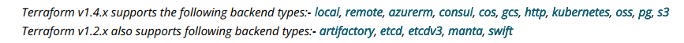

Backends
Backends define where Terraform's state snapshots are stored

Backends primarily determine where Terraform stores its state. Terraform uses this persisted state data to keep track of the resources it manages. Since it needs the state in order to know which real-world infrastructure objects correspond to the resources in a configuration, everyone working with a given collection of infrastructure resources must be able to access the same state data.
By default, Terraform implicitly uses a backend called local to store state as a local file on disk. Every other backend stores state in a remote service of some kind, which allows multiple people to access it. Accessing state in a remote service generally requires some kind of access credentials, since state data contains extremely sensitive information.
Some backends act like plain "remote disks" for state files; others support locking the state while operations are being performed, which helps prevent conflicts and inconsistencies.
Terraform has a built-in selection of backends, and the configured backend must be available in the version of Terraform you are using.
The arguments used in the block's body are specific to the chosen backend type; they configure where and how the backend will store the configuration's state, and in some cases configure other behavior.
Some backends allow providing access credentials directly as part of the configuration for use in unusual situations, for pragmatic reasons. However, in normal use we do not recommend including access credentials as part of the backend configuration. Instead, leave those arguments completely unset and provide credentials via the credentials files or environment variables that are conventional for the target system, as described in the documentation for each backend.
ps: If your configuration includes a cloud block, it cannot include a backend block.
LOCAL
The local backend stores state on the local filesystem, locks that state using system APIs, and performs operations locally.
The following configuration options are supported:
- path - (Optional) The path to the tfstate file. This defaults to "terraform.tfstate" relative to the root module by default.
- workspace_dir - (Optional) The path to non-default workspaces.
terraform {
backend "local" {
path = "relative/path/to/terraform.tfstate"
}
}
data "terraform_remote_state" "foo" {
backend = "local"
config = {
path = "${path.module}/../../terraform.tfstate"
}
}
REMOTE
Each Terraform configuration can specify a backend, which defines where state snapshots are stored.
terraform {
backend "remote" {
organization = "example_corp"
workspaces {
name = "my-app-prod"
}
}
}
The remote backend can work with either a single remote Terraform Cloud workspace, or with multiple similarly-named remote workspaces (like networking-dev and networking-prod). The workspaces block of the backend configuration determines which mode it uses: To use a single remote Terraform Cloud workspace, set workspaces.name to the remote workspace's full name (like networking-prod). To use multiple remote workspaces, set workspaces.prefix to a prefix used in all of the desired remote workspace names. For example, set prefix = "networking-" to use Terraform cloud workspaces with names like networking-dev and networking-prod
CONSUL
terraform {
backend "consul" {
address = "consul.example.com"
scheme = "https"
path = "full/path"
}
}
The Consul backend also requires a Consul access token. Per the recommendation above of omitting credentials from the configuration and using other mechanisms, the Consul token would be provided by setting either the CONSUL_HTTP_TOKEN or CONSUL_HTTP_AUTH environment variables
File
A backend configuration file has the contents of the backend block as top-level attributes, without the need to wrap it in another terraform or backend block:
address = "demo.consul.io"
path = "example_app/terraform_state"
scheme = "https"
Command-line key/value pairs
The same settings can alternatively be specified on the command line as follows:
$ terraform init \
-backend-config="address=demo.consul.io" \
-backend-config="path=example_app/terraform_state" \
-backend-config="scheme=https"